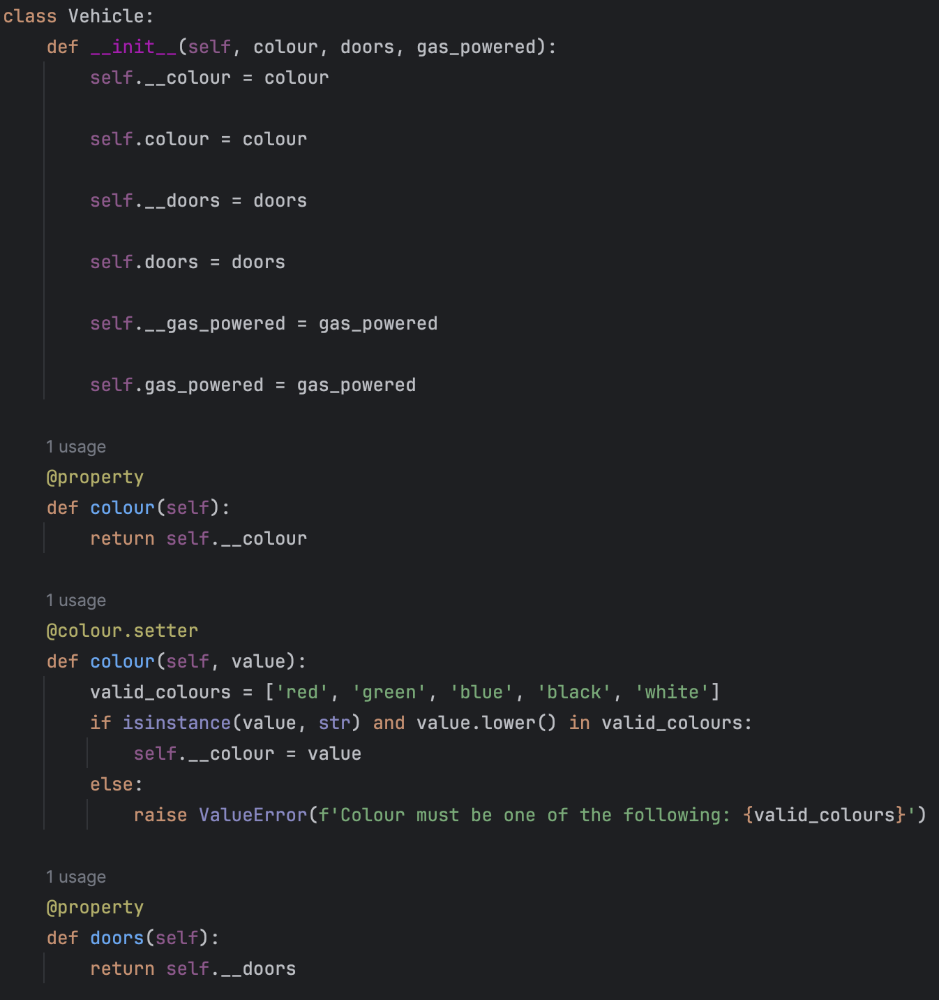
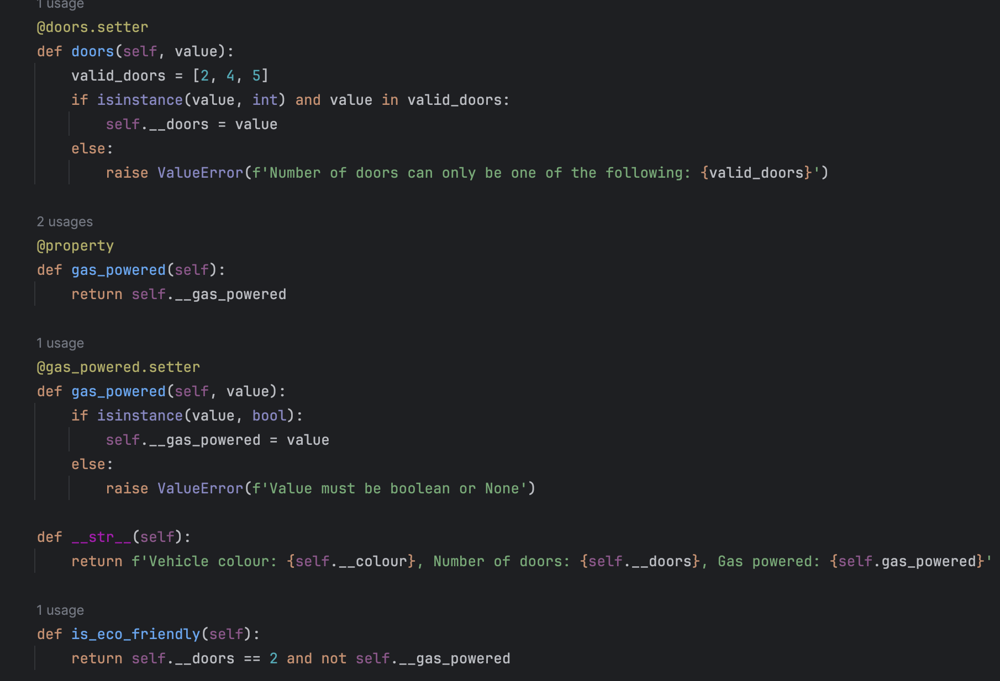
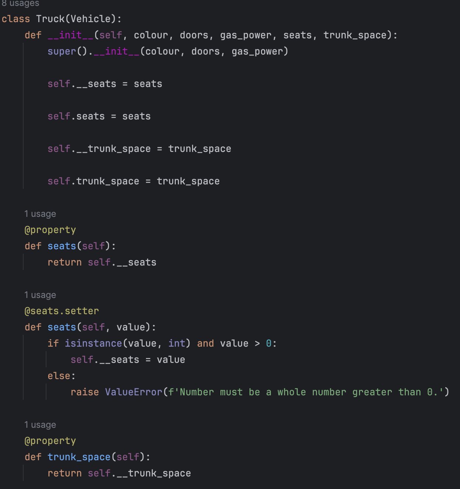
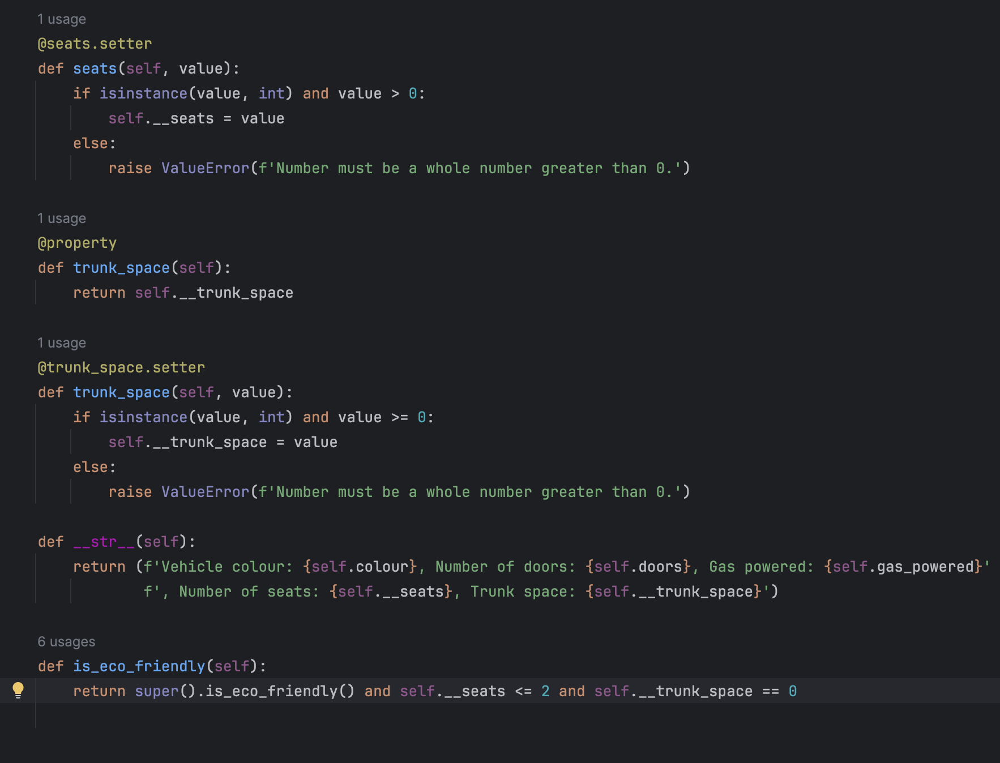
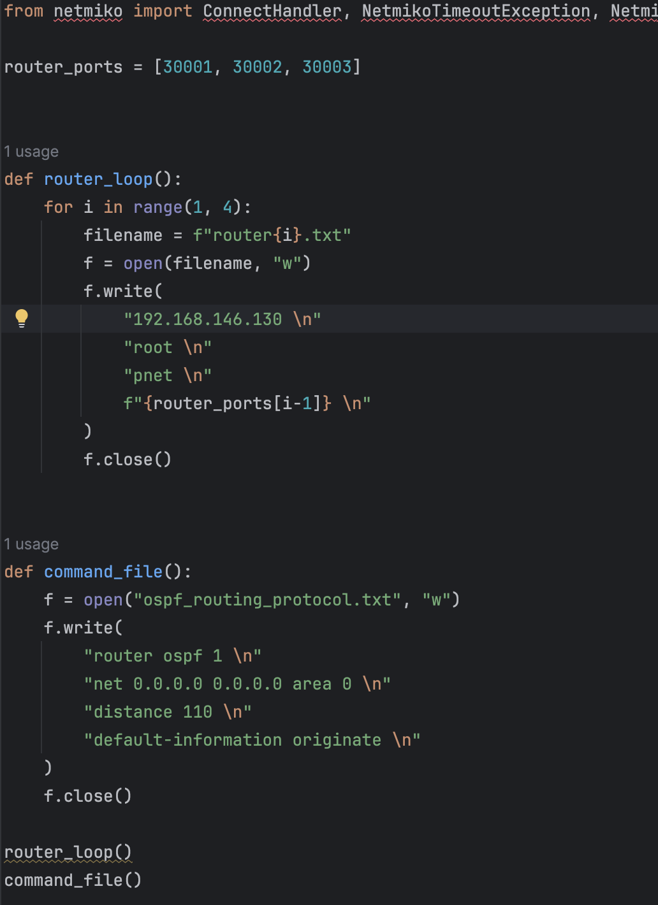
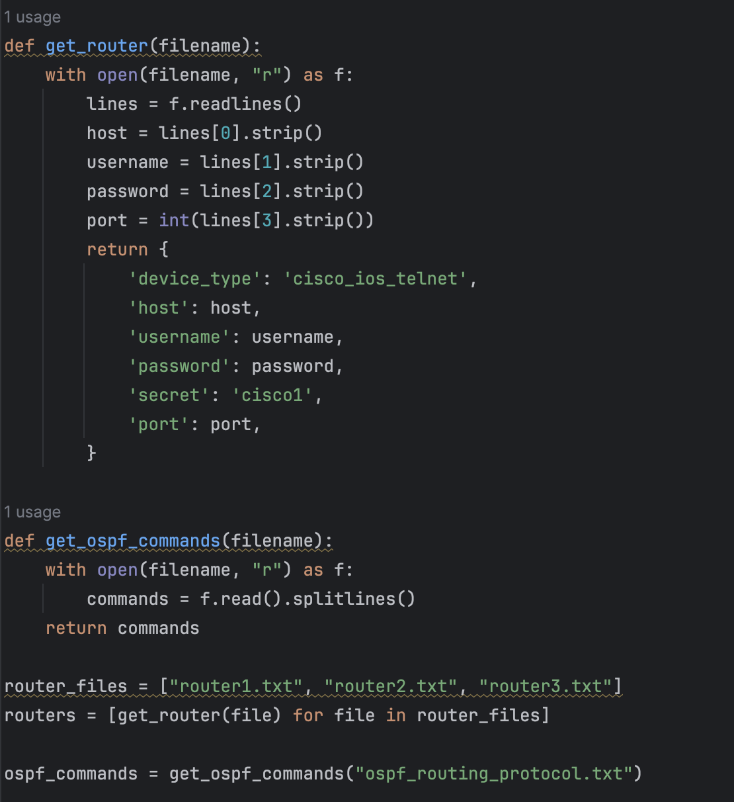
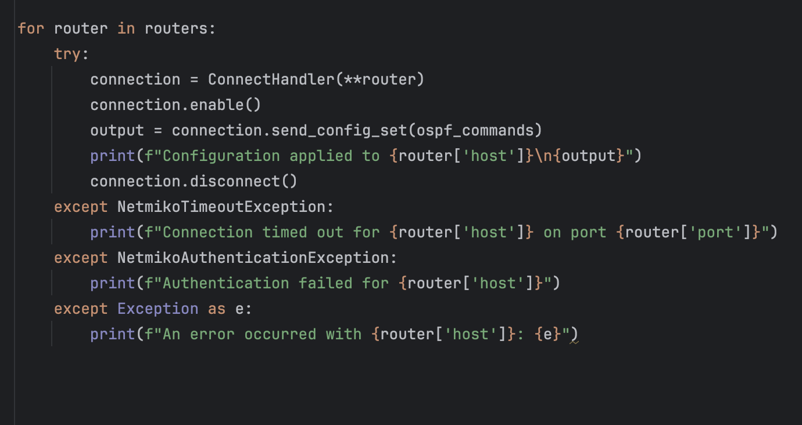
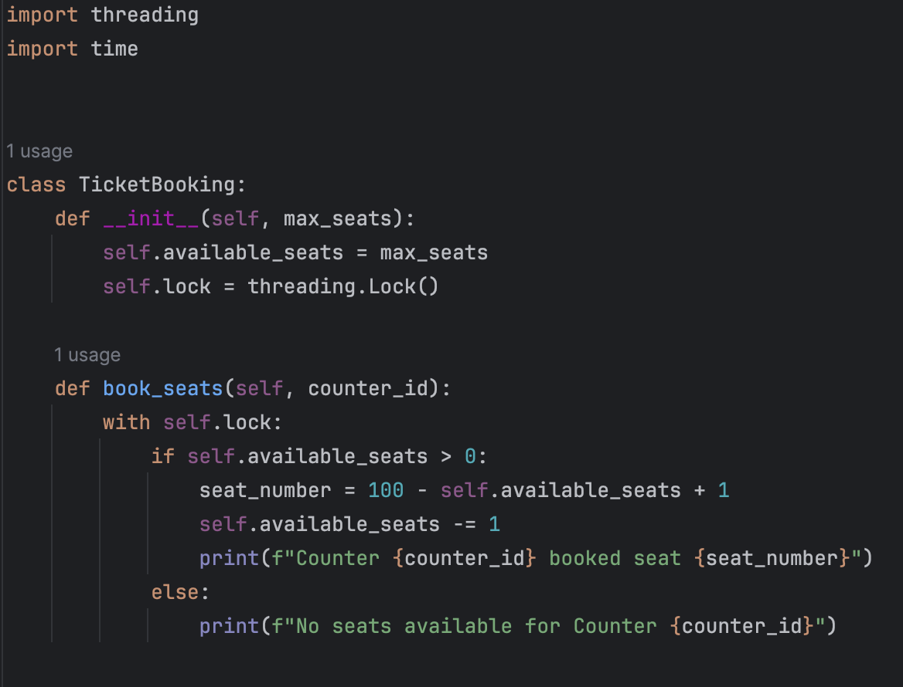
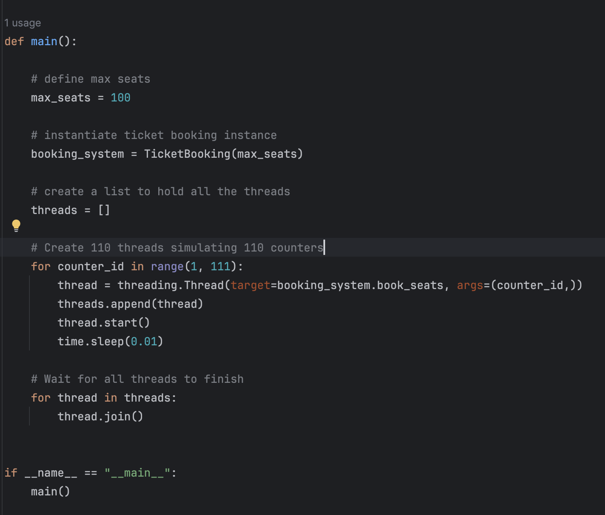

This code defines a Vehicle class with attributes for color, number of doors, and whether it's gas-powered, each validated through properties. It includes a method to check if the vehicle is eco-friendly (2 doors and not gas-powered) and a string representation method. The Truck class extends Vehicle, adding attributes for the number of seats and trunk space, with additional validation and an overridden eco-friendly check that includes specific truck criteria.




This script automates the configuration of OSPF routing on Cisco routers via Telnet using the Netmiko library. It creates configuration files for three routers with specific credentials and ports, as well as a file containing OSPF commands. The routers' details and OSPF commands are loaded, and each router is accessed sequentially to apply the configurations. Errors such as timeouts, authentication failures, or other exceptions are handled gracefully and logged.



This code simulates a multithreaded ticket booking system where 110 counters attempt to book 100 available seats. It uses a TicketBooking class with a thread-safe mechanism (a lock) to ensure seat availability is checked and updated atomically. Each counter is represented by a thread, and threads either successfully book a seat or report that no seats are available. The program ensures all threads complete execution before terminating.

